Model diagnostics for distributional, discrete and censored responses
Source:vignettes/articles/response-distributions.Rmd
response-distributions.RmdModel diagnostics explains the shared diagnostic methods. This article applies them to models with changing variance, exact zeros, censoring and categorical responses. In each case, the response distribution determines how residuals and replicated observations should be calculated. The examples use {mgcv} for fitting, {gratia} for diagnostics and {ggplot2} for plotting. The motorcycle data come from {MASS}, and the second fit to these data uses {GJRM}.
Fit a Gaussian model with changing variance
The MASS::mcycle data record head acceleration after a
simulated motorcycle impact. The mean acceleration changes rapidly after
impact, and its spread also appears to vary. A constant-variance
Gaussian model can represent the mean while failing to capture that
spread.
The fits assume independent measurement errors. The available columns, time and acceleration, provide no accident identifiers for estimating correlation between measurements from the same accident. We plot the observations and start with a model that allows mean acceleration to vary smoothly with time but assumes constant variance:
data("mcycle", package = "MASS")
ggplot(mcycle, aes(times, accel)) + geom_point() +
labs(x = "Time after impact (ms)", y = "Acceleration (g)")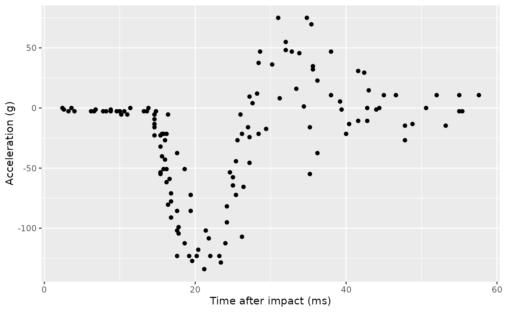
Next we use gaulss() to let both the mean and standard
deviation vary with time. We plot its two smooths and compare the
diagnostics with those from the constant-variance model:
varying <- gam(list(accel ~ s(times, k = 20), ~ s(times, k = 6)),
data = mcycle, family = gaulss(), method = "REML")
draw(varying)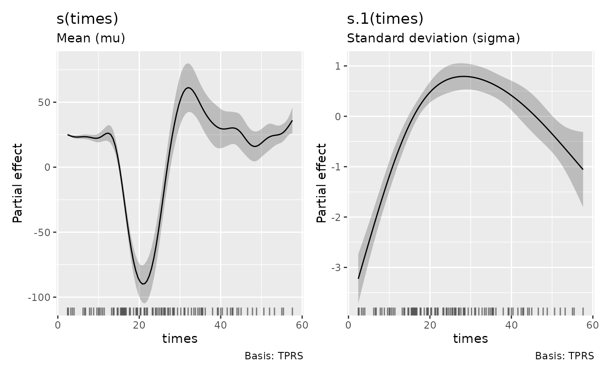
appraise(constant, type = "quantile", seed = 401)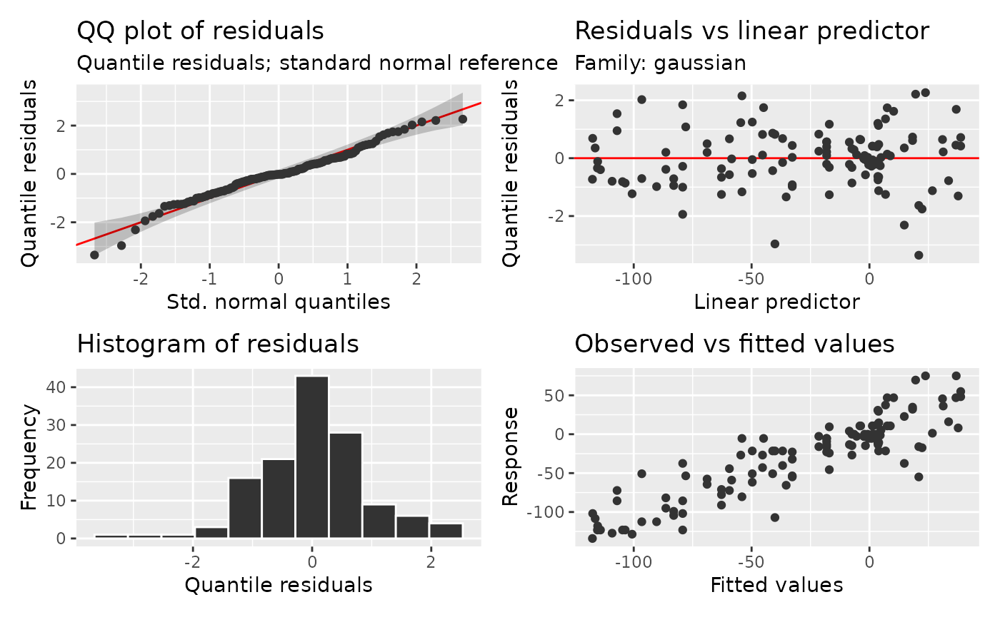
appraise(varying, type = "quantile", seed = 401)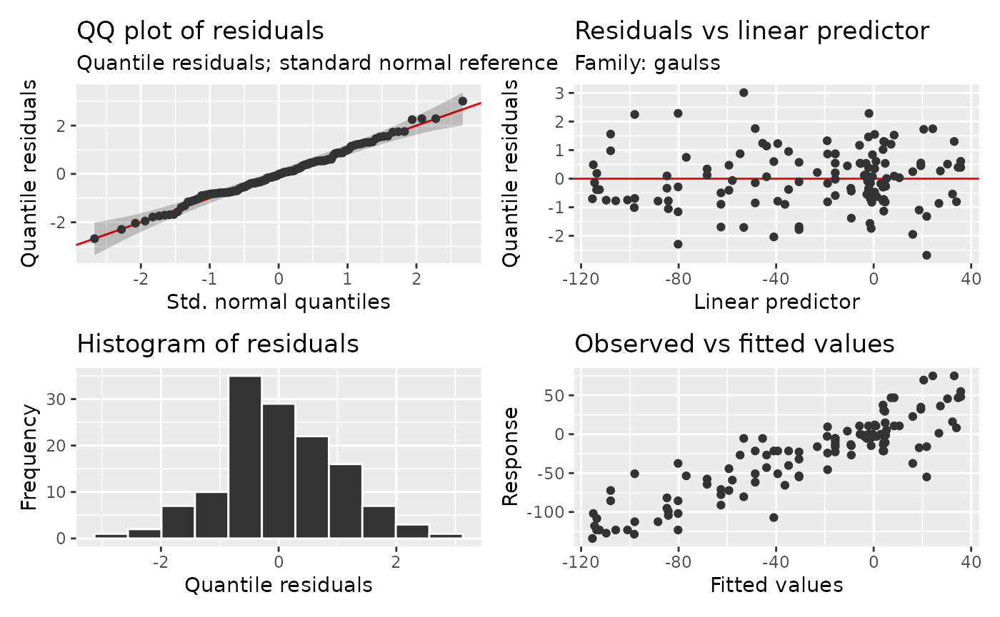
The first smooth contributes to mean acceleration. The second
contributes to the predictor for the standard deviation. For
gaulss(), the inverse link returns the reciprocal standard
deviation. We take its reciprocal to plot the fitted standard deviation
in the original units.
impact_grid <- data.frame(times = seq(min(mcycle$times), max(mcycle$times),
length.out = 100))
eta <- predict(varying, newdata = impact_grid, type = "link")
inverse_sd <- inv_link(varying, parameter = "scale")(eta[, 2])
ggplot(data.frame(impact_grid, sd = 1 / inverse_sd), aes(times, sd)) +
geom_line() + labs(x = "Time after impact (ms)", y = "Fitted standard deviation (g)")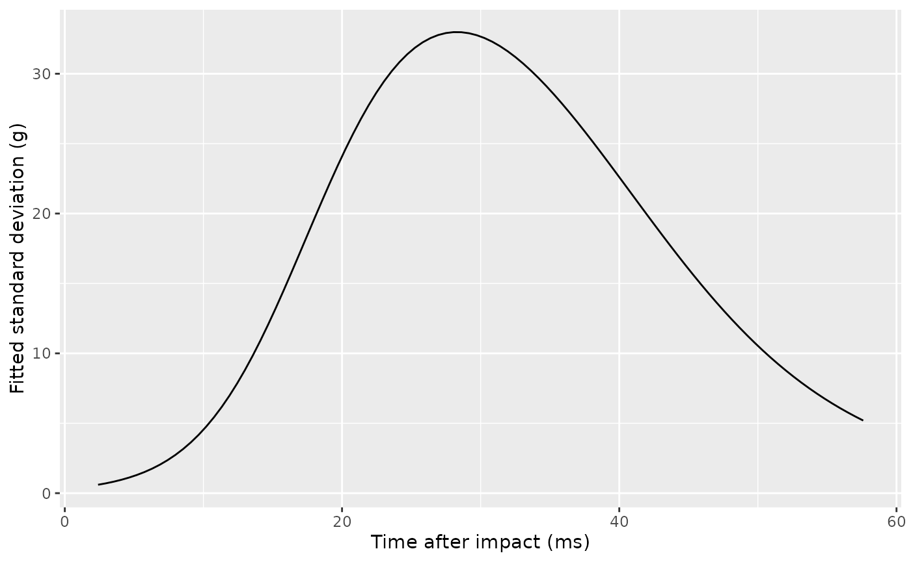
The spread increases around the period of rapid change. Modelling it reduces a systematic residual pattern and describes how both mean acceleration and its spread change with time after impact.
Estimate means and variability
fitted_moments() calculates quantities such as the
response mean, variance and standard deviation from the fitted
distribution parameters. It uses the joint uncertainty in those
parameters. We evaluate all three quantities at three times after impact
so that the output shows each quantity.
fitted_moments(varying, data = data.frame(times = c(10, 25, 45)),
moments = c("mean", "variance", "sd"))
#> # A tibble: 9 × 8
#> .row .parameter .fitted .se .lower_ci .upper_ci .status times
#> <int> <chr> <dbl> <dbl> <dbl> <dbl> <chr> <dbl>
#> 1 1 mean -3.02 1.72 -6.40 0.351 ok 10
#> 2 1 variance 20.6 6.21 11.4 37.2 ok 10
#> 3 1 sd 4.54 0.684 3.38 6.10 ok 10
#> 4 2 mean -68.3 7.46 -82.9 -53.7 ok 25
#> 5 2 variance 1002. 277. 583. 1723. ok 25
#> 6 2 sd 31.7 4.38 24.1 41.5 ok 25
#> 7 3 mean 0.941 6.77 -12.3 14.2 ok 45
#> 8 3 variance 257. 99.2 121. 548. ok 45
#> 9 3 sd 16.0 3.09 11.0 23.4 ok 45Each .parameter identifies a requested quantity. For
variance rows, .fitted contains the estimated response
variance, and .se describes uncertainty in that estimate.
Standard errors and interval bounds are on the quantity’s own scale. By
default the delta method approximates how changes in the model
parameters affect each quantity and accounts for their covariance.
conditional_moments() builds the same covariate grid as
conditional_values(). Other covariates are held at their
typical values. Choose posterior simulation to evaluate the moments at
joint parameter draws, then summarise those values:
conditional_moments(varying, condition = "times", moments = c("mean", "sd"),
uncertainty = "simulation", n_draws = 1000, seed = 419) |>
draw()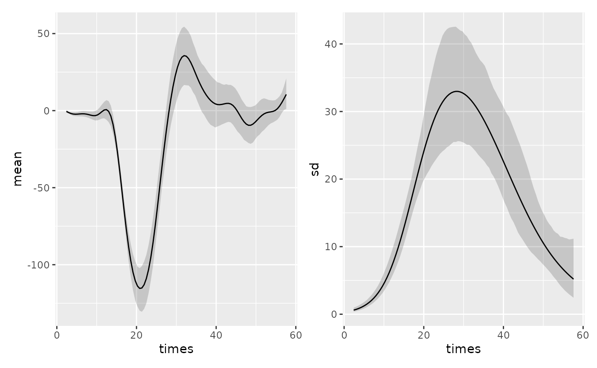
Other available quantities are the coefficient of variation
("cv"), skewness, kurtosis and excess kurtosis;
moments = "all" requests all seven. CV requires a positive
mean, so it is inappropriate where predicted acceleration is
negative.
For models with a global dispersion or shape parameter, the default
nuisance = "estimated" includes its uncertainty where the
fitting method provides the required information. Use
nuisance = "fixed" to hold such parameters at their
estimates. Parameters modelled by coefficients, including the changing
scale in this example, retain their joint uncertainty.
Some distributions have undefined moments for particular parameter
values. These results carry a .status explaining the
problem. With simulation, .p_defined records the proportion
of draws with a defined moment; an interval is withheld if any draw is
undefined. See fitted_moments() for the supported families
and uncertainty calculations.
Finally, compare the observed acceleration distribution with replicated datasets. This check draws the mean and scale coefficients together, retaining their covariance. The smoothing parameters stay fixed at their fitted values in this check. If a GAM estimates dispersion or shape outside the coefficient vector, the check also holds those parameters fixed.
posterior_predictive_plot(varying, n = 50, seed = 402)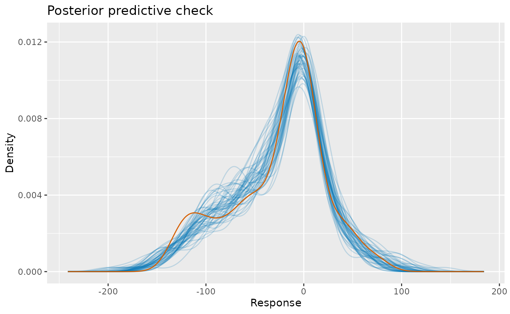
This check compares the overall acceleration distributions, pooling measurements across time. Use the residual-versus-predictor panels above to see whether the model captures changes in spread after impact.
Fit the mean and standard deviation with GJRM
Fit the same two smooths using GJRM::gamlss(), which
estimates their smoothness with a different fitting procedure. Then plot
the smooths and check the fitted Gaussian distribution.
library("GJRM")
impact_gjrm <- GJRM::gamlss(list(accel ~ s(times, k = 20), ~ s(times, k = 6)),
data = mcycle, family = "N")
gratia::draw(impact_gjrm)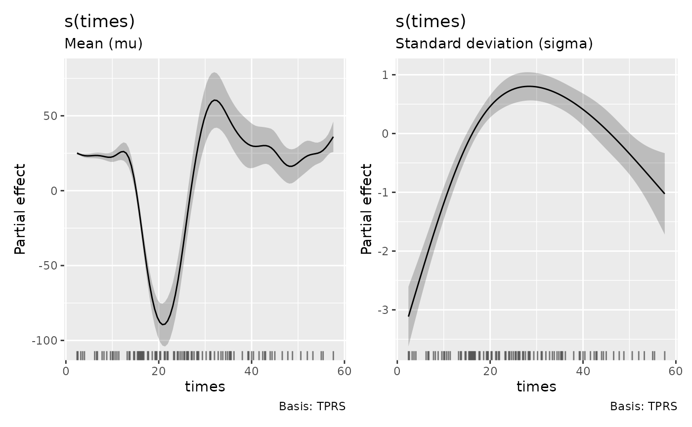
appraise(impact_gjrm, seed = 403)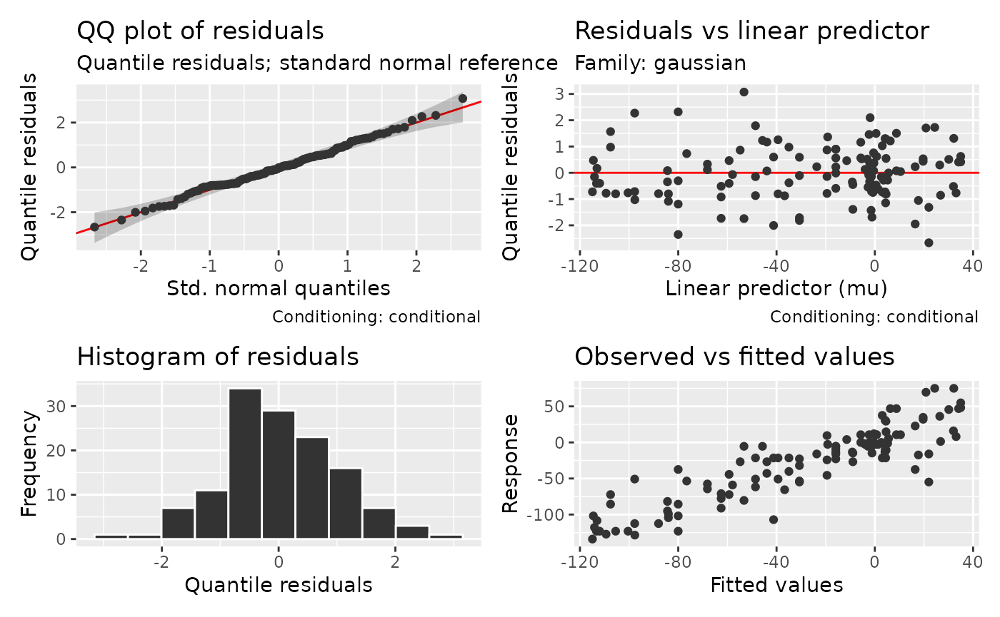
posterior_predictive_plot(impact_gjrm, n = 50, seed = 404)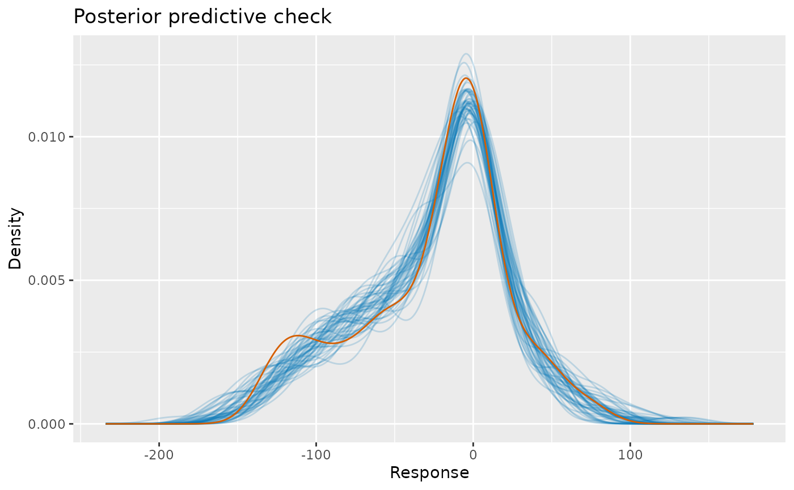
The smooth subtitles show which distribution parameter each curve describes. Compare the quantile residuals and posterior predictive checks with those from the mgcv fit to see whether the two fits show similar departures.
These diagnostics also support several other uncensored univariate
GJRM families, including Poisson, negative binomial, beta, Gamma and
Weibull. See diagnostic_support
for the full list. For some joint models fitted with
GJRM::gjrm(), gratia can check each response distribution
separately. The help topic specifies which model structures and
diagnostic functions are supported.
For Weibull fits, the first predictor controls scale rather than the response mean. For logistic and Gumbel fits it controls location; a Gumbel location is also different from its mean. gratia calculates response means and variances from both fitted parameters for observed-versus-fitted and Pearson residual plots. Posterior predictive checks draw both equations’ coefficients together, so uncertainty in both equations contributes to the replicated responses.
All these families support PIT, quantile, response and Pearson
residuals, as well as simulation-based residuals in the style of
{DHARMa}. These work in ordinary and scalable plots. Deviance residuals
are available for Gaussian ("N"), Gamma ("GA"
or "GAi") and Poisson ("P") fits. For example,
a fitted beta model beta_fit can be checked with
appraise(beta_fit, seed = 405) or
appraise(beta_fit, ppcheck = TRUE, n_ppc = 50, seed = 405).
To simulate a QQ reference for Pearson residuals, use
qq_plot(beta_fit, type = "pearson", method = "simulate", seed = 405).
The default quantile residuals instead use a fixed standard-normal
reference.
Positive observations and precision weights
Suppose a chemical concentration is measured in samples with
different amounts of replication. Averaging more independent
measurements can reduce variance without changing the mean. We simulate
positive concentrations whose squared coefficient of variation is
0.4 / precision, with a mean that changes smoothly with
flow:
set.seed(405)
chemical <- data.frame(flow = runif(400, 0, 10),
precision = rep(c(1, 2, 4, 8), length.out = 400))
mu <- exp(1 + 0.5 * sin(chemical$flow / 3))
chemical$concentration <- rgamma(400, shape = chemical$precision / 0.4,
scale = mu * 0.4 / chemical$precision)We fit a smooth flow effect with a Gamma family and log link, supplying the precision weights so the fitted variance reflects the different amounts of replication. We then inspect the quantile residual diagnostics:
gamma_fit <- gam(concentration ~ s(flow, k = 10), data = chemical,
weights = precision, family = Gamma(link = "log"), method = "REML")
appraise(gamma_fit, type = "quantile", seed = 406)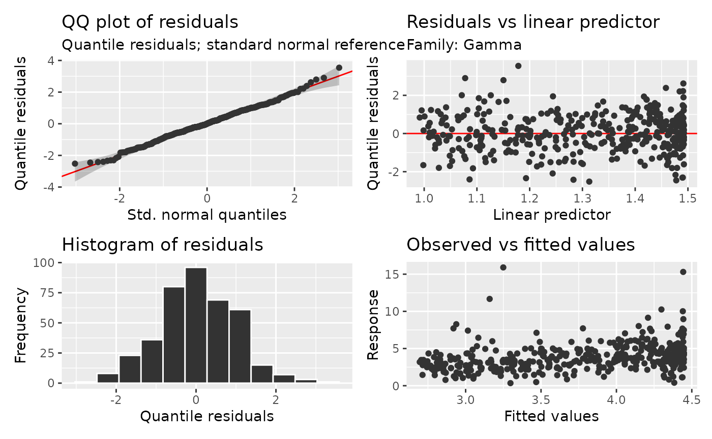
The diagnostics and simulations use each observation’s weight to calculate its response distribution. The fitted variance is \phi\mu_i^2/w_i, where w_i is precision and \phi is estimated dispersion. A larger weight narrows the response distribution. Supplying weights when sampling with gratia replaces the fitting weights, so use values appropriate to the measurements you want to simulate.
An inverse Gaussian alternative uses variance \phi\mu_i^3/w_i. It therefore allows variability to increase more rapidly with the mean. Fit it to the same data and compare the tails of the residual plots.
ig_fit <- gam(concentration ~ s(flow, k = 10), data = chemical,
weights = precision, family = inverse.gaussian(link = "log"), method = "REML")
qq_plot(ig_fit, type = "quantile", seed = 406)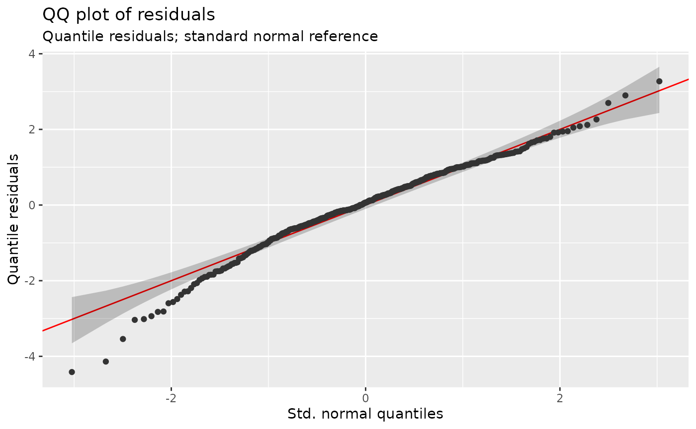
worm_plot(ig_fit, method = "uniform", seed = 407)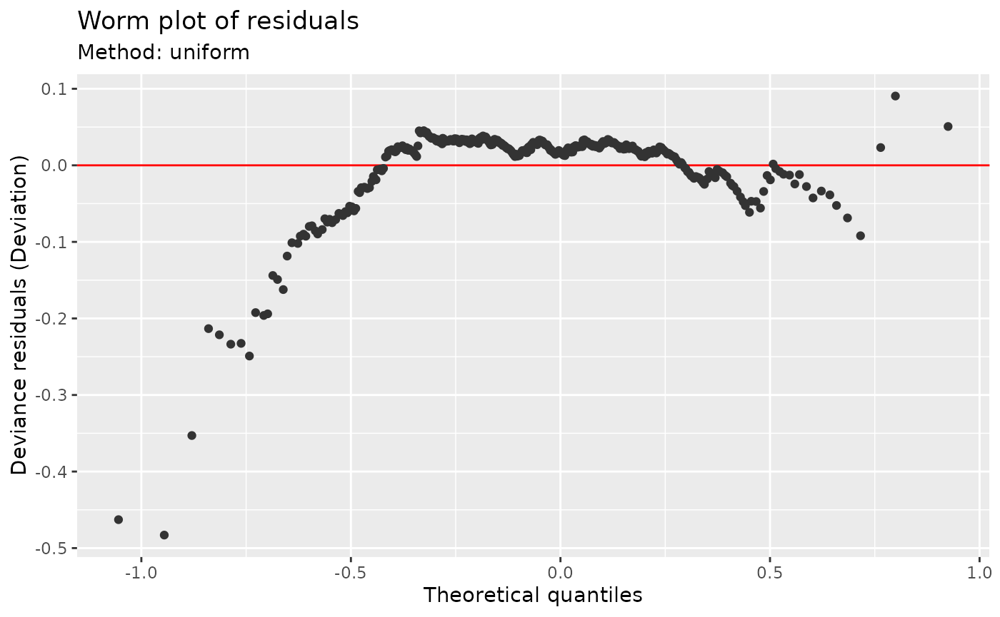
Both models can fit similar means while predicting different tails. In this example, the data were generated from the Gamma distribution, so the Gamma fit provides a reference for comparison.
Check responses with exact zeros and positive amounts
Biomass, rainfall amounts and expenditure can have exact zeros together with positive continuous observations. A Tweedie distribution with power between one and two describes the sum of a Poisson-distributed number of positive Gamma amounts. The sum is zero when that number is zero. The model links the zero probability and positive distribution through the mean, dispersion and power. A delta model instead estimates separate occurrence and positive components. See Working with sdmTMB models in gratia. We simulate rainfall amounts whose expected value increases with elevation:
set.seed(408)
rain <- data.frame(elevation = runif(400, 0, 1))
rain$amount <- mgcv::rTweedie(exp(-0.6 + 1.5 * rain$elevation), p = 1.5, phi = 1)We fit a Tweedie model and compare its residual diagnostics and replicated response distributions:
rain_fit <- gam(amount ~ s(elevation, k = 10), data = rain,
family = tw(), method = "REML")
qq_plot(rain_fit, seed = 409)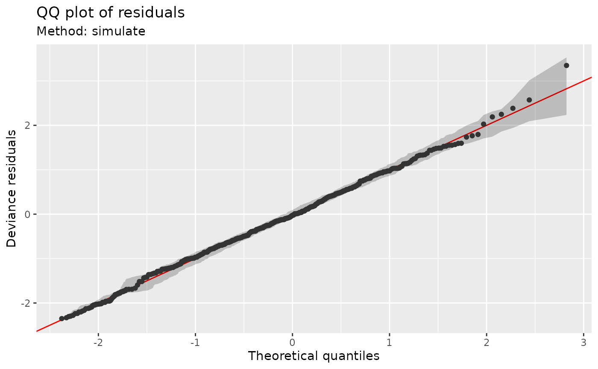
appraise(rain_fit, type = "quantile", seed = 409)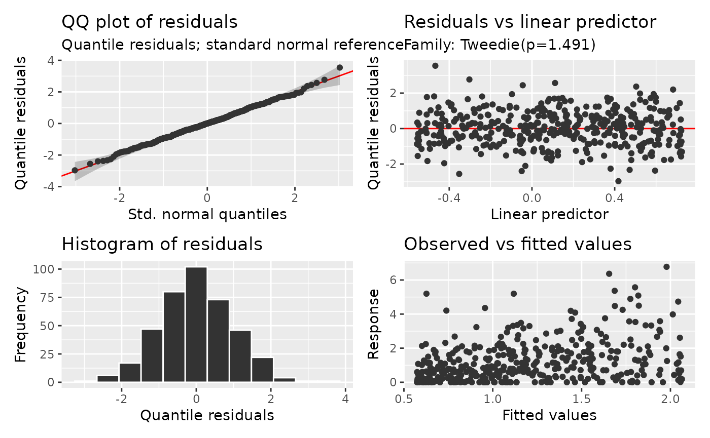
posterior_predictive_plot(rain_fit, n = 50, seed = 410)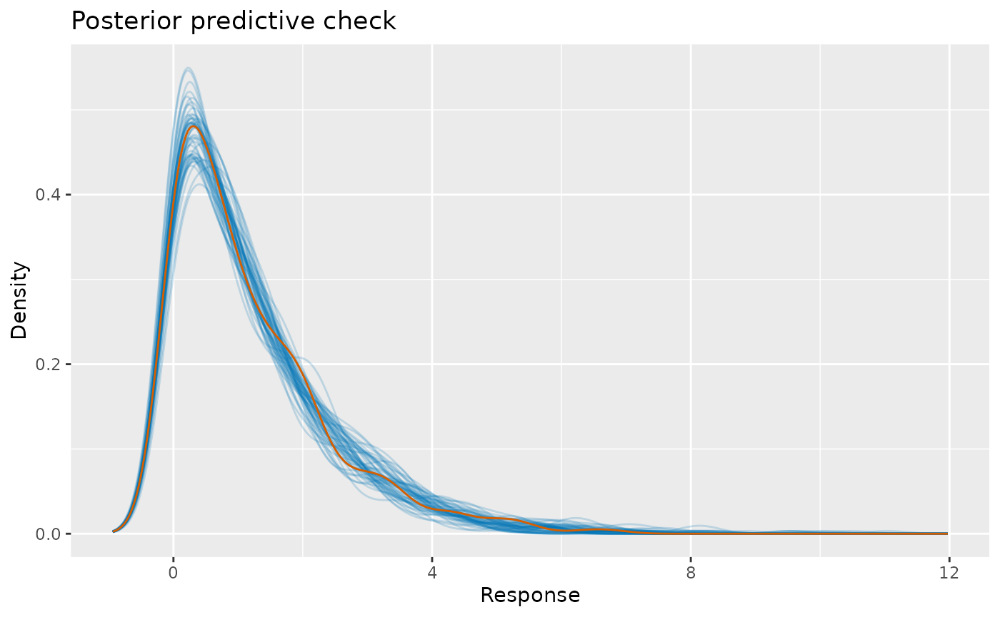
For PIT residuals, gratia evaluates the cumulative distribution function (CDF) of the fitted Poisson–Gamma mixture. At zero, it draws a uniform value between zero and the fitted probability of a zero. For traditional Tweedie residuals, the default QQ reference uses simulation to avoid calculating the inverse CDF, which can be slow for large datasets.
The posterior predictive plot smooths the zeros into a peak with the kernel density estimate. To check the zeros directly, compare their expected and observed proportions. We also check that every PIT residual for a zero falls within its allowed range.
p <- rain_fit$family$getTheta(TRUE)
phi <- summary(rain_fit)$scale
zero_probability <- exp(-fitted(rain_fit)^(2 - p) / (phi * (2 - p)))
zero_pit <- quantile_residuals(rain_fit, type = "pit", seed = 409)
data.frame(observed_zero_fraction = mean(rain$amount == 0),
fitted_zero_fraction = mean(zero_probability),
largest_zero_probability_rank = max(zero_pit[rain$amount == 0] /
zero_probability[rain$amount == 0]))
#> observed_zero_fraction fitted_zero_fraction largest_zero_probability_rank
#> 1 0.125 0.1253626 0.9931912Dividing a zero’s PIT residual by its fitted probability of zero gives a number between zero and one.
Observations below a detection limit
A nondetect tells us that the latent concentration lies below a
threshold. Treating the threshold as an exact observation discards that
information. Instead, we record the threshold together with a bound
indicating that the true value is smaller. To demonstrate the encoding
we simulate normally distributed log concentrations. Their mean
increases with dose, and independent Gaussian errors have standard
deviation 0.7. We record exact measurements above a fixed limit and
censored measurements below it. For cnorm(), record the
detection limit in the first column and -Inf in the second
for a nondetect. Repeat exact readings in both columns.
set.seed(411)
assay <- data.frame(dose = runif(300, 0, 4))
latent <- rnorm(300, mean = 0.3 + 0.5 * assay$dose, sd = 0.7)
limit <- 0.6
assay$reading <- pmax(latent, limit)
assay$bound <- ifelse(latent < limit, -Inf, latent)We fit a smooth dose effect with cnorm(), using the two
response columns to retain the information in censored observations:
censored_fit <- gam(cbind(reading, bound) ~ s(dose, k = 8), data = assay,
family = cnorm(), method = "REML")We now calculate PIT residuals, draw their quantile QQ plot, and plot the PIT values against dose, distinguishing censored and exact observations:
u <- quantile_residuals(censored_fit, type = "pit", seed = 412)
qq_plot(censored_fit, type = "quantile", seed = 412)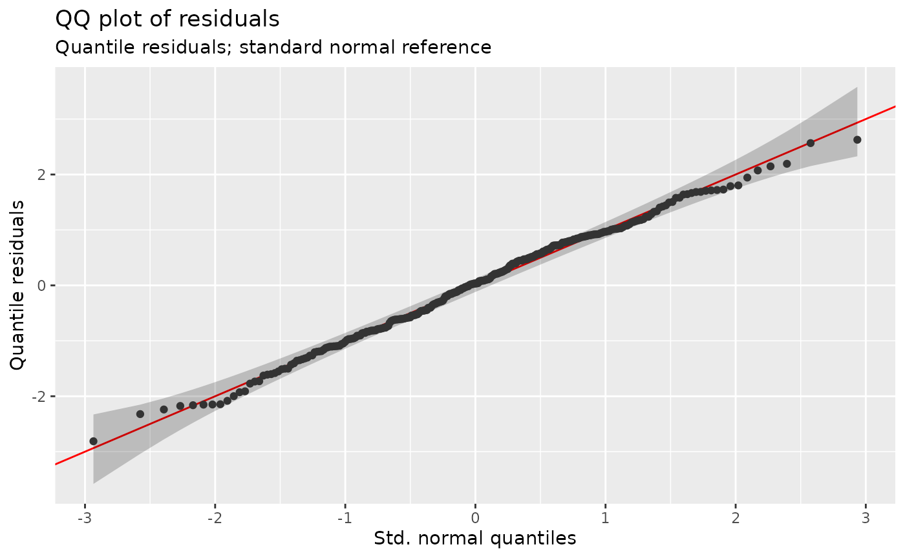
ggplot(data.frame(assay, pit = u), aes(dose, pit)) +
geom_point(aes(colour = bound == -Inf)) +
labs(x = "Dose", y = "PIT residual", colour = "Below limit")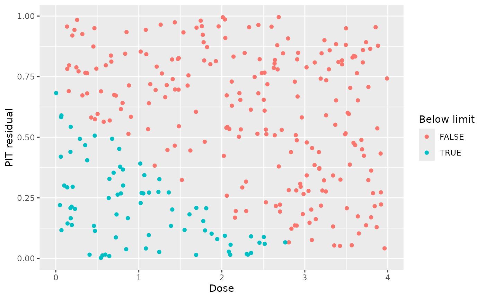
An exact observation uses the fitted probability of a response at or
below its measured value. A nondetect draws uniformly from zero to the
probability of falling below the detection limit. For right or interval
censoring, the range is determined by the supplied bounds.
cpois() and clog() have corresponding count
and logistic latent families. Their distribution helpers and predictions
are also supported. Censored response draws describe the latent
response. A posterior predictive plot of the observed censored values
remains unsupported: it needs an explicit censoring process applied to
each draw. For a known fixed limit, you can draw latent responses and
apply that threshold yourself to reproduce the measurement
mechanism.
Check binomial and categorical responses
Binomial sampling weights have a different meaning from precision weights: they count trials. A numeric success proportion with 20 trials can take values in steps of 1/20; a factor-valued Bernoulli response still has one binary trial, even if it carries likelihood weights. Gratia preserves this distinction in residuals and response draws. Here we simulate detections at sites with different visit totals. Detection probability increases with cover, and each site’s success count follows a binomial distribution:
set.seed(413)
visits <- data.frame(cover = runif(240), trials = rep(c(5, 10, 20), 80))
visits$success <- rbinom(240, visits$trials, plogis(-1 + 2 * visits$cover))
visits$failure <- visits$trials - visits$successWe fit the successes and failures with a binomial GAM, then inspect residual and posterior predictive checks:
visit_fit <- gam(cbind(success, failure) ~ s(cover, k = 8), data = visits,
family = binomial(), method = "REML")
appraise(visit_fit, type = "quantile", seed = 414)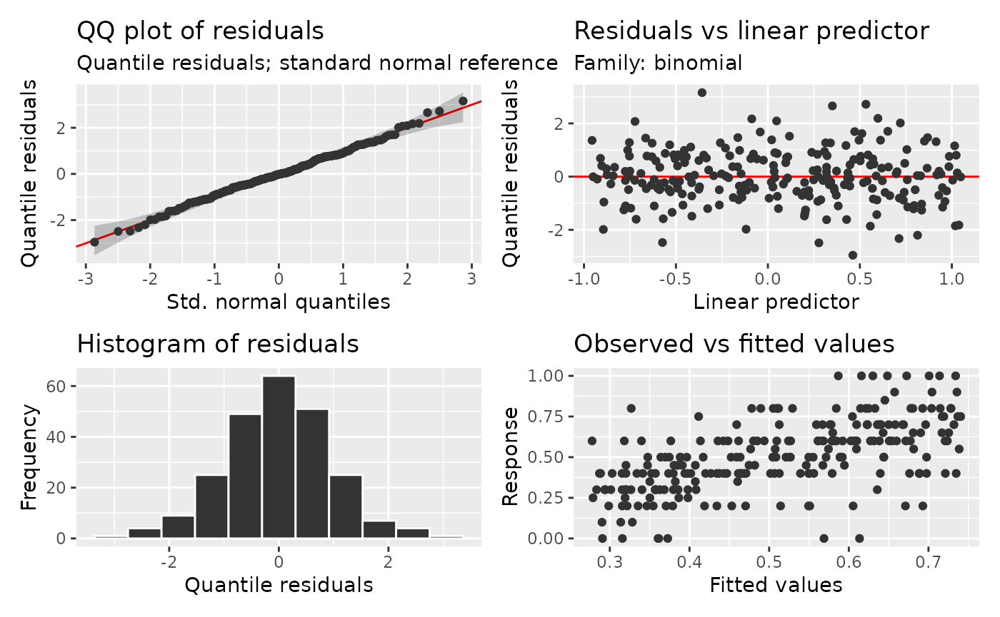
posterior_predictive_plot(visit_fit, n = 50, seed = 414)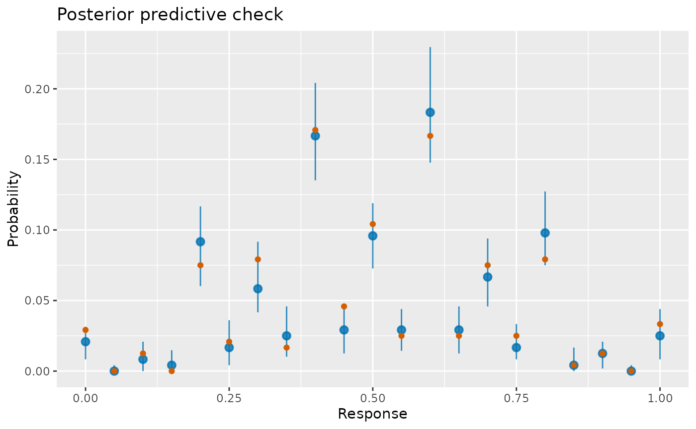
The generating probability has a linear logit, so a familiar ordinary
logistic regression also answers this question. The same public
diagnostics accept its glm object directly:
visit_glm <- glm(cbind(success, failure) ~ cover, data = visits,
family = binomial())
qq_plot(visit_glm, type = "quantile", seed = 414)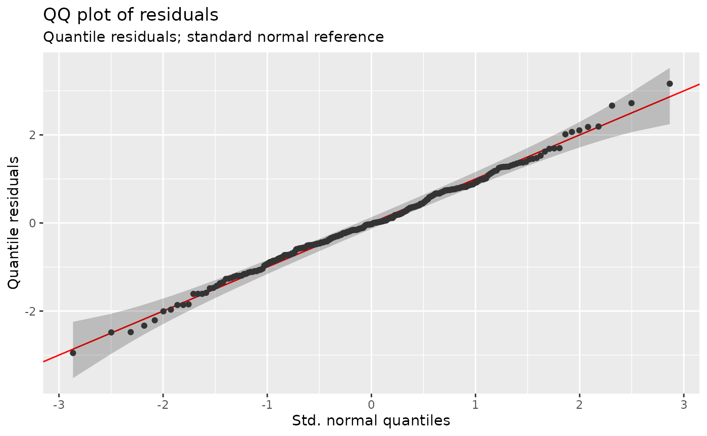
The smooth model allows the log odds to curve with cover. The QQ plots for both fits look similar, consistent with the linear relationship used to generate the log odds.
The PIT randomisation uses the probability of the site’s observed success count. The posterior predictive plot uses each site’s success proportion, giving every site equal weight. Sites with 20 visits have less variable success proportions than sites with five visits at the same fitted detection probability.
Ordered response categories
An ordinal model can describe an ordered response, such as a
four-level condition score, by placing thresholds on an underlying
continuous variable. We use gratia’s "eg1" example with
four independent covariates. The latent response combines nonlinear
effects of x0, x1 and x2 with
standard logistic noise. x3 has no true effect. Thresholds
at -1, 3 and 7 produce four categories.
We fit a smooth for each covariate with an ordinal family containing four categories, then check the quantile residuals:
ordinal_fit <- gam(y ~ s(x0) + s(x1) + s(x2) + s(x3), data = ordinal_data,
family = ocat(R = 4), method = "REML")
qq_plot(ordinal_fit, type = "quantile", seed = 416)The thresholds define the simulated rating process. Quantile residuals randomise within the probability of each observed category before applying the standard-normal transformation.
Nominal response categories
For unordered categories, mgcv::multinom() models
outcomes coded 0, ..., K. To calculate PIT residuals,
gratia accumulates probabilities in that coding order and randomises
within the probability of the observed category. This is the randomised
probability transform described by Brockwell
(2007). For the same fitted probabilities, changing their
accumulation order can change individual residuals and the patterns they
reveal.
We illustrate this with three equally probable categories and a covariate that has no effect on their probabilities:
set.seed(417)
category_data <- data.frame(x = runif(300))
category_data$y <- sample(0:2, nrow(category_data), replace = TRUE)We fit the three-category response with two smooth predictors, then inspect a quantile QQ plot:
category_fit <- gam(list(y ~ s(x), ~s(x)), data = category_data,
family = multinom(K = 2), method = "REML")
qq_plot(category_fit, type = "quantile", seed = 418)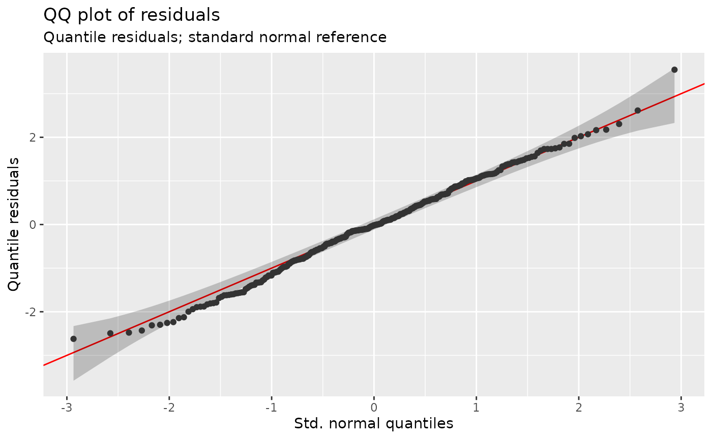
Surrogate residuals for nominal categories
Surrogate residuals offer another way to check a
multinom() model without accumulating probabilities in a
category order. They treat each category as having an unobserved score,
or utility, with the highest score determining the observed
choice. gratia draws these scores conditional on that choice, then
subtracts their fitted locations and the Gumbel mean. The construction
follows Cheng, Wang and
Zhang (2021).
In the next simulation, category 0 has a constant score location,
category 1’s location increases with x, and category 2’s
decreases. Independent Gumbel noise creates variation in the choices at
each covariate value:
set.seed(417)
nominal_data <- data.frame(x = runif(400, -2, 2))
locations <- cbind(0, nominal_data$x, -.5 - nominal_data$x)
utilities <- locations - log(-log(matrix(runif(1200), nrow = 400)))
nominal_data$y <- max.col(utilities) - 1LWe fit a multinomial GAM, extract surrogate residuals for its categories, and plot the diagnostics:
nominal_fit <- gam(list(y ~ s(x, k = 6), ~ s(x, k = 6)),
data = nominal_data, family = multinom(K = 2), method = "REML")
head(surrogate_residuals(nominal_fit, seed = 418))
#> 0 1 2
#> [1,] 0.2642662 -0.7456620 -0.4193910
#> [2,] -1.2404136 3.2844008 -1.0975267
#> [3,] -2.1688542 -2.1006100 -0.6264208
#> [4,] 2.4842765 -1.5569361 0.5762615
#> [5,] -1.1996106 1.4861575 -0.2546800
#> [6,] -1.3084249 0.1337424 0.4076122
appraise(nominal_fit, type = "surrogate", seed = 418)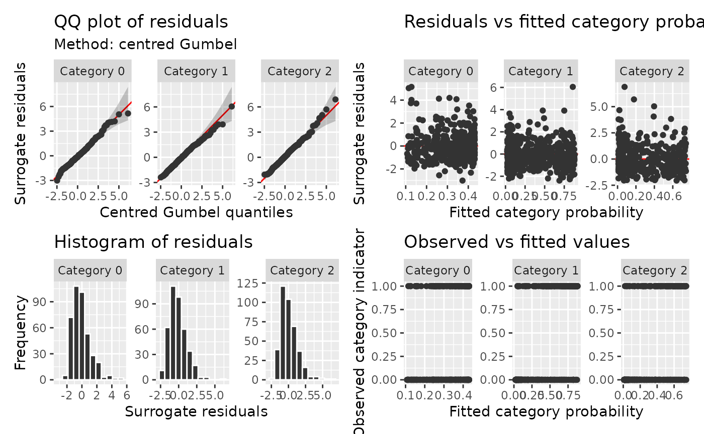
surrogate_residuals() returns one column per category,
including reference category 0. QQ and worm plots show each category
separately against centred Gumbel quantiles. Their pointwise bands treat
fitted parameters as fixed and apply separately to each component.
Residual-versus-fitted panels use each category’s fitted probability,
including category 0. Observed-versus-fitted panels compare category
indicators with those probabilities. All panels share a single draw. For
large datasets, scalable = TRUE summarises each category
separately while retaining the same residual draws for the same seed.
See surrogate_residuals() for the calculation and reference
distributions.
Choose diagnostics for other response families
Other supported response families use the same diagnostic functions. The following table identifies features of their fitted distributions that matter when interpreting the results:
| Family or model | What changes in the checks? |
|---|---|
gaulss(), gammals(),
gumbls(), gevlss(), ziplss()
|
CDF and quantile references use all distributional predictors; zero-inflated models include the point mass |
twlss() |
Mean, power and dispersion vary; select
parameter = "power" for the second link and
"scale", "sigma" or "phi" for the
third |
shash() |
Skewness and tail weight matter; PIT checks remain useful when the package’s deviance contrast is invalid |
ziP() |
Zero-inflated count probabilities include fitted zero mass; it is a
different model from separate ziplss() predictors |
betar() |
Native simulation clips at epsilon endpoints, so diagnostics include their probability mass; this remains an approximation to the fitting likelihood |
scat() |
Scaled-t references retain the fitted heavy-tail parameters |
mvn() |
PIT checks each response separately; joint simulation retains covariance between responses |
mgcv::bcg() and {mgcvUtils}’s
clognorm()
|
Link extraction and response predictions are supported. See the help topic below for diagnostic support. |
For models with several distribution parameters, specify which link
you want when using link(), inv_link() or
extract_link(). Here we recover the Tweedie power and
dispersion from their linear predictors, then select the second
predictor of a multivariate normal family:
inv_link(twlss(), parameter = "power")(0)
#> [1] 0
inv_link(twlss(), parameter = "phi")(0)
#> [1] 0
inv_link(mvn(d = 2), which_eta = 2)(1)
#> [1] 1For the generalised extreme value (GEV) family, the mean exists when shape is below one and the variance when shape is below one-half. If any fitted mean is undefined, gratia retains the PIT and quantile panels and omits the observed-versus-fitted mean panel. Signed deviance residuals also require shape to be at least minus one. For sinh-arcsinh fits, use PIT or quantile residuals if the deviance calculation fails because a fitted density exceeds one. These checks use fitted probabilities and work even when deviance residuals are undefined.
The diagnostic_support
reference lists the supported distributions and restrictions, including
quasi families and working correlations that do not define a joint
response distribution.